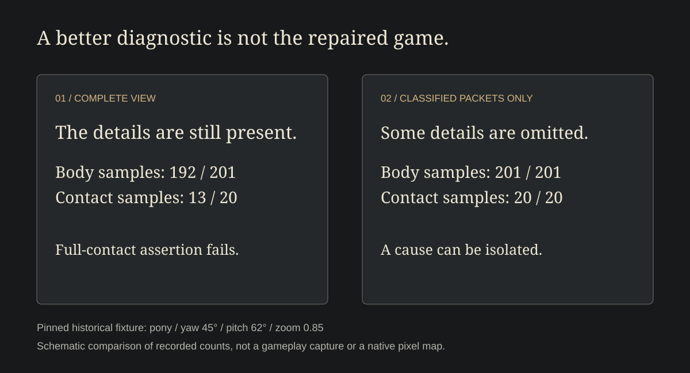

A pony stands beside a block. Turn the island a little and its feet disappear into the ground.
Nothing has moved except the view.
A small island asks for a particular kind of trust. The player looks, chooses a place and tries something there. The picture needs to keep its account of where things are, even as the camera wanders.
The ground has to keep its word
SkyStack Builder's renderer experiments begin with that agreement. The game keeps a shared camera for drawing and choosing a place. But a common view does not give every drawn detail a dependable position within it.
The broad face of a block is one thing. A bevel, a patch of soil and the edge of a pony's foot each need to belong somewhere too. If their depth is guessed badly, a small detail can cover something that ought to be in front of it.
Let the pony show through everything and the feet return. So does a different problem: a raised block can no longer hide the pony when it should.
The useful answer has to preserve both relationships. Feet meet the ground. A wall can still stand in the way.
Take a little away and look again
During an earlier investigation, one fixed camera view lost part of the pony's body and much of its contact with the ground. A second version left out some terrain details. All the sampled parts of the pony returned.
That comparison gave the work a place to look. Something among the omitted details deserved closer attention.
It also left the island incomplete. The patches and edges that make a place feel particular were part of the picture we wanted to keep.


Keep the small things
A patch of soil deserves an account of where it belongs, just as the large block beneath it does. The repair has to let both remain in the picture.
There is a design question underneath the drawing work: which small agreements make a strange place feel dependable?
A player may never notice a correctly hidden hoof. They notice when a turn of the camera makes the island contradict itself. That interruption can reach beyond the pony. Is this a place I can build? Will the block I choose be the one I meant?
Turn the island again
The next player study would keep the whole scene present. Turn the camera. Put a raised block in front of the pony. Try a ramp. Ask someone to choose a place beside it, then look from another side.
Watch where they hesitate and what they believe is touching the ground. A rendering test can check sampled pixels. The person can tell us whether the place still makes sense.
The island has room for pastel weather and improbable creatures. Its ground should be something they can stand on.